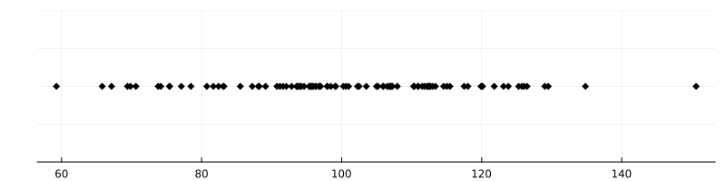

25 Formules de Tweedie
La statistique bayésienne révèle toute sa puissance lorsqu’on a réellement une connaissance a priori sur le phénomène à estimer. Dans cette partie, on va voir comment les méthodes bayésiennes permettent de corriger les méthodes fréquentistes, en particulier dans tous les cas où l’observation est simplement une version bruitée du paramètre à estimer.
25.1 Introduction
Les test qui prétendent mesurer l’intelligence, comme le Quotient Intellectuel, sont standardisés : le test a été conçu pour que la répartition du QI sur une large population soit une gaussienne centrée en 100, et d’écart-type 15. Si l’on prend un individu au hasard, la probabilité que son QI soit entre 85 et 115 est dont d’environ 68%.
Dans une population de \(n=100\) individus, on note \(\mu_i\) le QI de la personne \(i\). Pour mesurer les \(\mu_i\), on fait passer un test à chaque personne : le résultat \(x_i\), est seulement une estimation de \(\mu_i\) : on se doute bien qu’un seul test ne suffit pas à déterminer exactement \(\mu_i\). Une personne de QI \(\mu_i=105\) pourrait très bien obtenir un score de \(x_i=99\) si elle n’est pas en forme ce jour là. Cependant, il est raisonnable de penser que \(x_i\) est centrée en \(\mu_i\), et d’écart-type pas trop grand, disons \(\sigma=5\), supposé connu : \[x_i = \mu_i + \mathscr{N}(0,\sigma^2).\]
Le point de vue de Fisher
Estimation des \(\mu_i\). En statistique fréquentiste, les \(x_i\) sont des réalisations de variables iid \(N(\mu_i, \sigma^2)\) et on cherche à estimer \(\mu_i\). Cherchons l’estimateur du maximum de vraisemblance \(\hat{\mu}_{\mathrm{EMV}}\). La densité de \(x\) est \(N(\mu, \sigma^2)\) donc on se place dans un modèle gaussien \(N(m,\sigma^2)\) et on cherche à estimer \(m\) ; la log-vraisemblance \(\ell(m)\) est égale à \[\ln(2\pi \sigma^2)^{-1/2} - \frac{(x_i-m)^2}{2\sigma^2}\]donc l’EMV est \[\hat{\mu}_{\mathrm{EMV}} = \arg\max_m \ell(m) = x_i.\] Il n’y a aucune surprise ici. Sans information supplémentaire et si l’on suppose que les \(x_i\) sont centrés sur les \(\mu_i\), l’estimateur du maximum de vraisemblance est simplement le résultat observé.
La personne la plus intelligente. Imaginons que les tests \(x_i\) aient une répartition comme suit :

La personne “la plus intelligente” a obtenu \(x_i = 150\). On peut estimer son QI à 150, mais il y a quand même un doute : dans la population, le QI \(\mu_i\) est sensé être à peu distribué selon \(N(100, 15^2)\). Un QI de 150 représente à peu près une déviation de 3.3 écarts-types par rapport à la moyenne 100 : un événement de cet ordre a une probabilité d’environ 0.1% (cela s’estime par exemple via Théorème 3.1). La probabilité pour que parmi 100 personnes, au moins une ait un QI plus grand que 150 est donc \(1-(99.9\%)^{100} \approx 10\%\). Ce n’est pas impossible, mais c’est peu.
Or, il y a une autre possibilité : peut-être que la personne \(i\) a un QI plus proche de 140, mais que ce jour-là, elle a eu de la chance. En fait, la probabilité pour qu’une personne ait un \(\mu_i\) qui dévie de plus de 2 écarts-types (donc, \(\mu_i>130\)) est de 5%, et la probabilité pour que le jour du test, cette personne dévie de 2 écarts-types (donc \(x_i-\mu_i>10\)), est encore de 5%. Cela fait une probabilité d’environ 0.25%, beaucoup plus probable que 0.1%.
Lemme 25.1 Il est plus probable que la personne “la plus intelligente” de la salle soit 1) assez intelligente avec un \(\mu_i\) de 130, et 2) qu’elle ait eu de la chance le jour du test - en tout cas, c’est 2 à 3 fois plus probable que le fait qu’elle ait un QI \(\mu_i\) supérieur à 150.
La théorie statistique « à la Fisher » ne permet pas d’intégrer une connaissance a priori sur le paramètre \(\mu\) à estimer.
Dans notre cas, la connaissance a priori qu’on a sur les \(\mu_i\) est qu’ils sont eux-mêmes aléatoires, distribués selon \(N(100, 15^2)\) : il est donc presque impossible qu’un des \(\mu_i\) soit plus grand que, disons, 200. La statistique bayésienne permet d’intégrer cette connaissance a priori et de corriger l’estimation naïve de Fisher.
Le point de vue de Bayes
Le problème se décrit très naturellement dans le langage bayésien. En effet, les \(\mu_i\) sont eux-mêmes aléatoires, et la loi a priori sur les \(\mu_i\) est parfaitement connue, puisque c’est \(\mathscr{N}(100, 15^2)\). On observe les \(x_i\) qui suivent une loi \(\mathscr{N}(\mu_i, \sigma^2)\) et on cherche à estimer les \(\mu_i\) sachant les \(x_i\). Calculons la loi a posteriori. Par simplicité, je noterai simplement \(\mu\) et \(x\) au lieu de \(\mu_i\) et \(x_i\).
La loi a posteriori \(p(\mu \mid x)\) est donnée par la formule de Bayes, \[p(\mu \mid x) \propto p(x \mid \mu) p(\mu).\] Tout ici est connu et compris : \(p(x \mid \mu)\) est la densité gaussienne \(\mathscr{N}(\mu, \sigma^2)\), \(p(\mu)\) est la densité gaussienne \(\mathscr{N}(100, 15^2)\). Par conséquent, la loi a posteriori est proportionnelle à \[\exp\left(-\frac{(x-\mu)^2}{2\sigma^2}-\frac{(\mu-100)^2}{2\cdot 15^2}\right).\] En notant \(\tau = 15\) pour alléger la notation, on peut calculer l’estimateur MAP de \(\mu\) sachant \(x\) : la condition de premier ordre est \[\frac{\mu-x}{\sigma^2} + \frac{\mu-100}{\tau^2} = 0,\] et on obtient donc l’estimateur MAP.
Lemme 25.2 \[\hat{\mu}_{\text{MAP}} = \frac{\sigma^2}{\sigma^2 + \tau^2}x + \frac{\tau^2}{\sigma^2 + \tau^2}100. \tag{25.1}\]
On peut interpréter la formule Équation 25.1 comme un estimateur de régression vers la moyenne : si \(x\) est plus grand que la moyenne 100, l’estimation est tirée vers le bas ; si \(x\) est plus petit, elle est tirée vers le haut. Plus la variance du bruit \(\sigma\) est faible, plus la correction est faible.
C’est un cas particulier d’une technique générale qui donne des estimateurs plus robustes que l’estimateur du maximum de vraisemblance dans tous les cas, comme l’estimateur de James-Stein. Ces estimateurs (tout comme Équation 25.1) sont « biaisés » au sens où, si l’on considère les \(\mu_i\) comme fixés, ils ne sont pas centrés en \(\mu_i\). Cependant, ils ont un risque quadratique plus faible que l’estimateur du maximum de vraisemblance. Pour ces raisons, ils ne rentrent pas vraiment dans le cadre fréquentiste « classique » de Fisher.
Le biais de sélection
Dans la formule de l’estimateur Équation 25.1, lorsque la réalisation \(x\) est très éloignée de la moyenne, la correction de Bayes est très forte. L’estimateur a intégré la remarque qu’on avait fait dans la section précédente : plus \(x\) est éloigné de la moyenne, plus il est probable que la vraie valeur de \(\mu\) soit plus proche de la moyenne. Ce phénomène se rencontre souvent sous le nom populaire de « paradoxe du survivant » ou « biais de sélection ».
L’estimation naturelle a toujours tendence à sous-estimer le rôle du hasard dans les phénomènes extrêmes. Typiquement, les grandes fortunes doivent leur richesse à un mélange de talent et de chance ; les sots ne retiennent que le talent, quand les jaloux ne retiennent que la chance.
25.2 Les formules de Tweedie
L’exemple développé en introduction est un cas particulier d’un résultat très général, dû à Meyne Tweedie, Herbert Robbins, Koichi Miyasawa, et fréquemment redécouvert.
Le cadre de ces formules est le suivant : on cherche à estimer un paramètre \(X \in \mathbb{R}^d\) à partir d’une observation bruitée, \(Y = X+\varepsilon\), où \(\varepsilon \sim \mathscr{N}(0, \sigma^2 I_d)\) est un bruit gaussien indépendant de \(X\). On suppose qu’une loi a priori sur \(X\) est connue ; on note \(\pi\) sa densité. La densité de \(Y\) (la marginale, en langage bayésien) est alors la convolution de \(\pi\) et de la densité du bruit, \(\mathscr{N}(0, \sigma^2 I_d)\). On la notera \(p_\sigma\).
Score des données et débruitage
Les formules de Tweedie relient l’estimateur Bayes-Optimal (l’estimateur MMSE) à ce qu’on appelle le score des données, \(\nabla_x \ln p(x)\). J’insiste sur le terme score des données : en statistiques classiques, on réserve le mot “score” à \(\nabla_\theta \ln p_\theta(x)\), la dérivée en le paramètre \(\theta\) du modèle. Mais dans de nombreux articles (surtout en machine learning génératif), le mot “score” désigne le “grad log p” où la dérivée est prise par rapport à la variable \(x\) observée. En cas d’ambiguité, je recommande d’utiliser les termes “score des données” et “score des paramètres”.
Théorème 25.1 (Formules de Tweedie, premier ordre) \[\begin{align} \nabla_y \ln p_\sigma(y) &= -\mathbb{E}\left[\frac{\varepsilon}{\sigma^2} \,\middle|\, Y\right]. \end{align}\]
Cette expression est équivalente à la formule de prédiction du bruit, \[\begin{align} \mathbb{E}[\varepsilon \mid Y] &= -\sigma^2 \nabla_y \ln p_\sigma(Y), \end{align}\] et à la formule de débruitage, \[\begin{align} \mathbb{E}[X \mid Y] &= Y + \sigma^2 \nabla_y \ln p_\sigma(Y). \end{align}\]
Ces formules montrent que la log-densité marginale \(\ln p_\sigma\) contient est un prédicteur de bruit optimal.
Preuve.
Le second ordre
Théorème 25.2 (Formules de Tweedie, second ordre) \[\begin{align} \nabla^2 \ln p_\sigma(y) &= -\frac{I_d}{\sigma^2} + \mathrm{Cov}\left(\frac{\varepsilon}{\sigma^2} \,\middle|\, Y\right)\\ \mathrm{Cov}(\varepsilon \mid Y) &= \sigma^2 I_d + \sigma^4 \nabla^2 \ln p_\sigma(Y),\\ \mathrm{Cov}(X \mid Y) &= \sigma^2 I_d + \sigma^4 \nabla^2 \ln p_\sigma(Y). \end{align}\]
L’erreur de débruitage optimale (le Minimum Mean Squared Error) est donnée par \[\begin{align} \mathrm{MMSE} &= \mathrm{trace}\left(\mathrm{Cov}(X \mid Y)\right)\\ &= \sigma^2 d + \sigma^4 \mathrm{trace}\left(\nabla^2 \ln p_\sigma(Y)\right). \end{align}\]
Preuve.
25.3 Le cas Gaussien
Lorsque toutes les lois sont conjointement gaussiennes (le modèle et la loi a priori), les formules de Tweedie découlent d’un fait très puissant : la loi a posteriori est elle-même gaussienne.
Soit donc \(X \sim \mathscr{N}(\mu, \Sigma)\) et \(Y = X + \varepsilon\), où \(\varepsilon \sim \mathscr{N}(0, \sigma^2 I_d)\). La loi jointe de \((X,Y)\) est une gaussienne multivariée dans \(\mathbb{R}^{2d}\) d’espérance \((\mu, \mu)\) et de matrice de covariance \[\begin{pmatrix} \Sigma & \Sigma \\ \Sigma & \Sigma + \sigma^2 I_d \end{pmatrix}.\]
Le théorème du conditionnement gaussien Théorème 13.2 donne alors que la loi de \(X\) conditionnellement à \(Y\) est une gaussienne de moyenne \[\mu + \Sigma (\Sigma+\Sigma^2 I_d)^{-1}(Y-\mu) \tag{25.2}\] et de covariance \[\Sigma - \Sigma (\Sigma+\sigma^2 I_d)^{-1}\Sigma .\]
Dans le cas d’une loi gaussienne réelle (disons \(X \sim \mathscr{N}(\mu, \tau^2)\) avec \(\tau^2\) la variance), le mode, la moyenne et la médiane sont tous les trois égaux. Ainsi, l’estimateur de \(X\), qu’il soit MAP, MMSE ou MAVE, est donné par la formule Équation 25.2, à savoir \[\hat{X} = Y + \frac{\tau^2}{\tau^2 + \sigma^2} (Y-\mu). \tag{25.3}\] Cela peut se récrire comme une moyenne, \[\hat{X} = \frac{\tau^2}{\tau^2 + \sigma^2} Y + \frac{\sigma^2}{\tau^2 + \sigma^2} \mu.\] On retrouve la formule Équation 25.1.